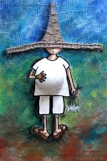
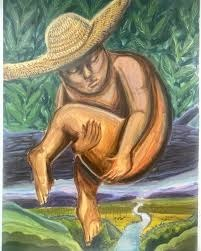
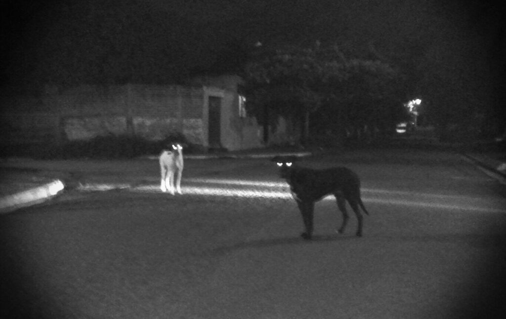
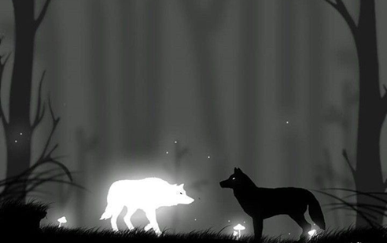
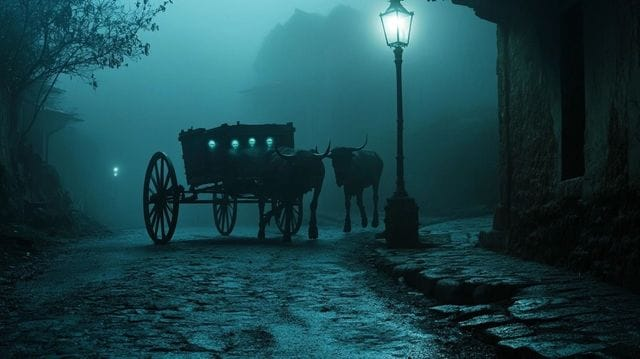
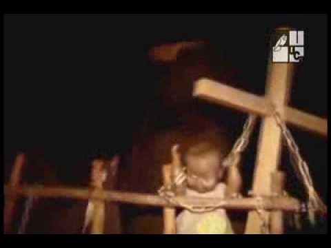
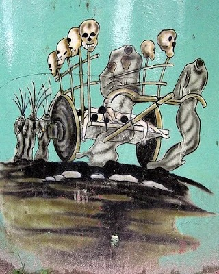
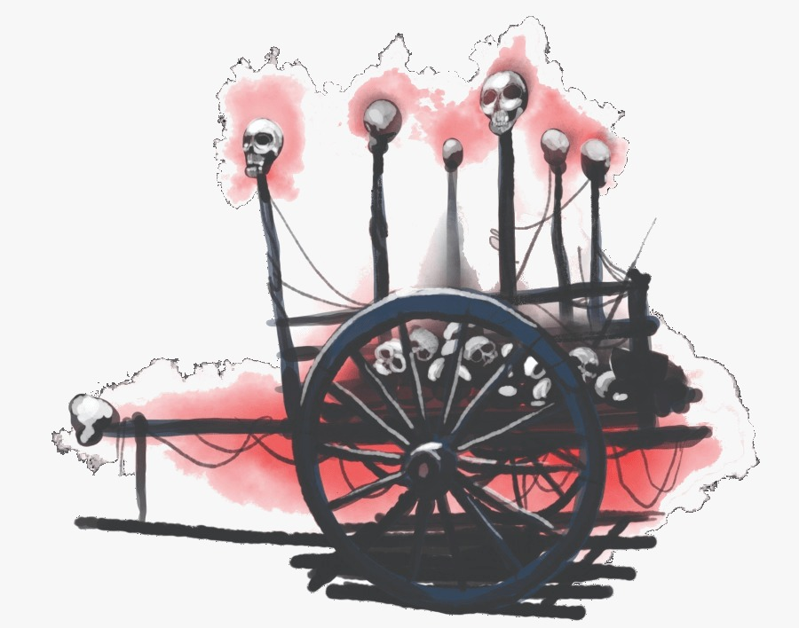

Centro de Evidencias Multimedia
Registros visuales, literatura clásica y material audiovisual.
I. Archivo Fotográfico
1. La Siguanaba


2. El Cipitío




3. El Cadejo


4. La Carreta Chillona






II. Biblioteca del Misterio
📚
Mitos y leyendas de El Salvador: Mitología Pipil (Spanish Edition)
Análisis de las raíces indígenas y coloniales de nuestras leyendas.
Consultar Archivo📄
Mitos y leyendas de El Salvador
Reseña del libro "Mitos y leyendas de El Salvador"
Consultar Archivo